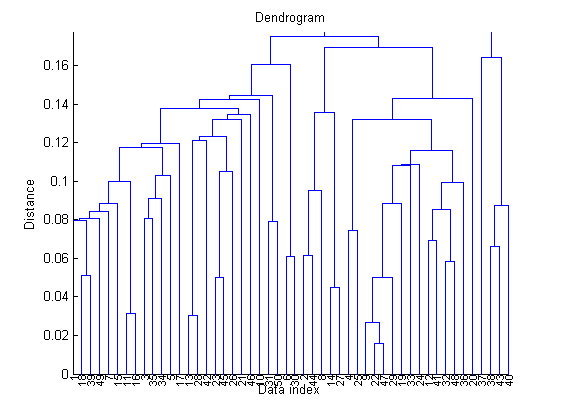
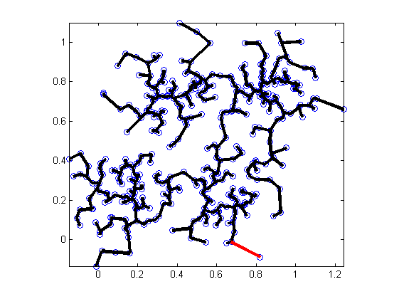
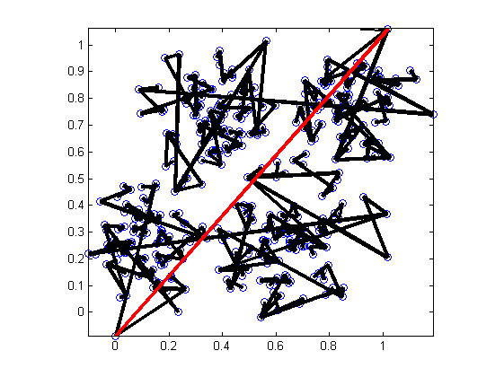

Hierarchical Clustering
Hierarchical clustering tries to combine or divide a dataset into clusters iteratively, such that a tree-like hierarchical structure is created, primarily for data visualization. To constructed such a hierarchical tree structure, we can adopt two approaches:
- Agglomerative hierarchical clustering: We can start from the tree leaves (or data instances) and combine two nearest clusters into one at each iteration.
- Partitional clustering: We can start from the root of the tree (which contains all data instances) and select a cluster to split at each iteration.
We shall focus on the agglomerative (bottom-up) hierarchical clustering in this toolbox.
Contents
A basic example
The following example demonstrates the dendrogram after agglomerative hierarchical clustering.
data=rand(2, 50); % 50 data instances of dim 2 distMat=distPairwise(data); % Distance matrix of 50 by 50 hcOutput=hierClustering(distMat); hierClusteringPlot(hcOutput); % Plot the dendrogram
Use of different cluster distances
We apply different cluster distance functions to obtain the corresponding tree structures, as follows:
data=rand(2, 50); % 50 data instances of dim 2 distMat=distPairwise(data); % Distance matrix of 50 by 50 method='single'; hcOutput=hierClustering(distMat, method); subplot(1,2,1); hierClusteringPlot(hcOutput); title(['method=', method]); method='complete'; hcOutput=hierClustering(distMat, method); subplot(1,2,2); hierClusteringPlot(hcOutput); title(['method=', method]);

From the resultant tree structures, we can observe the following trends:
- Single linkage tends to make the tree slide to one side, with bigger clusters stay big and smaller clusters stay small.
- Complete linkage tend to generate balanced trees, with all clusters growing big simultaneously.
Visualization of the clustering process
If you want to see the animation of the clustering process, try the next example:
clf
DS=dcData(6);
data=DS.input;
distMat=distPairwise(data);
hcOutput=hierClustering(distMat, 'single');
hierClusteringAnim(data, distMat, hcOutput);
 MATLAB will display the animation as the clustering goes. It can be proved that the resultant connections via single linkage over a 2D dataset is actually the minimum spanning tree of the dataset.
Of course, if we switch to the cluster distance of complete linkage, the plot will be quite different:
clf
DS=dcData(6);
data=DS.input;
distMat=distPairwise(data);
hcOutput=hierClustering(distMat, 'complete');
hierClusteringAnim(data, distMat, hcOutput);
 Copyright 2011-2012 Jyh-Shing Roger Jang.